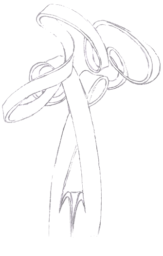

« Home
» Sculpture
» Jewellery
» About me


2006 The Birmingham Botanic Garden Sculpture Prize Nomination
Yoko Fukada is a sculptor born in Japan.
She has studied art, sculpture and jewellery-making in the UK, America and Japan. She established a jewellery design studio in 1985, working in London, New York and Tokyo for private clients.
From 1990 she had her own space in Ginza Tenshodo in Tokyo and has shown her jewellery in New York at Bergdorf Goodman and in London at Hennell in Bond Street.
She has now returned to fine art after studying at the Central St Martins College of Art and is particularly absorbed in environmental issues. Her work consists of site-specific sculpture and installations relating to the environment, landscapes and gardens.
In 2005 Yoko Fukada was short-listed for the Jerwood Sculpture Prize. She currently studies Aesthetics and Landscapes at the Architectural Association in London.